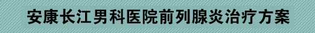
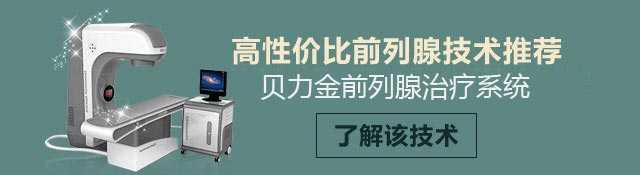
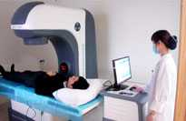

Choose your own situation to make the next step easier to judge.
Only frequent urination and urgent urination There are other symptomsProstatitis and urethritis can both cause frequent urination and urgency
症状容易混淆的两种疾病
前列腺炎
尿频尿急
尿不尽尿分叉
尿刺痛
排尿不畅
会阴耻骨痛
寒战发热
……
尿道炎
尿频尿急
尿道刺痒灼痛
脓性分泌物
尿混浊
会阴耻骨痛
血尿
……

【快答】确诊前列腺炎要做哪些检查？
前列腺炎隐患多 不可拖
【快答】前列腺炎吃什么药有效？
规范治疗专业应对
前列腺炎指日可愈
前列腺炎指日可愈

① 药物治疗/Medication
【推荐等级】★★
【适用情况】前列腺炎初期
【性价比】中等<了解具体费用>
【复发率】40%左右
【结 论】药物治疗可控性低、复发率高，即时费用较低，但治疗周期长。
③ 物理治疗/Physical Therapy

【推荐等级】★★★★★
【适用情况】前列腺炎任何时期
【性价比】较高<了解具体费用>
【复发率】1.7%左右
【结 论】物理治疗的安全性最高、复发率低，疗效快，疗费合理，无痛无创。
安康治疗前列腺炎首选长江医院
1、最诚信的价格
严格依照卫生局制定标准收费，合理收费省时省力！
2、最专业的男科
拥有独立的男性健康研究中心，专家亲诊享最高性价比方案
3、最先进的设备
独家引进贝力金前列腺治疗系统 ，治疗周期短见效快零复发
4、最贴心的服务
导医全程陪诊微笑服务， 一对一专家诊疗保隐私！